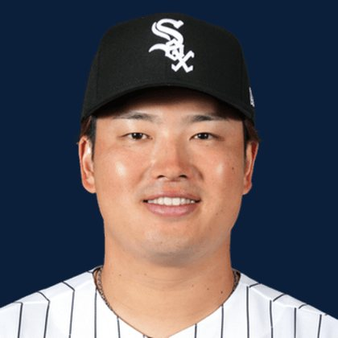

BASE KEEP
The Keep · The Diamond
Player File · 1B CWS

Munetaka Murakami
#5 · 1B · Chicago White Sox · age 26 · B/T LR · 6' 2" / 213 lbs · MLB debut 2026 · Kumamoto, Japan
Keep avg59.74
# Boards23
BK Value2,301
Spread34–155
Hitting
| Year | G | AB | R | H | 2B | HR | RBI | SB | BB | SO | AVG | OBP | SLG | OPS |
|---|---|---|---|---|---|---|---|---|---|---|---|---|---|---|
| 2026 | 91 | 326 | 67 | 75 | 13 | 29 | 58 | 1 | 69 | 131 | .230 | .367 | .537 | .904 |
The Keep#57BK 2,301
The Lineup#44BK 2,987
The Diamond#57BK 2,301
The 2026 line
Keep #57 · avg 59.74 · 23 boards · .230 / 29 HR / 1 SB / .904 OPS
Baseball Savant
Starcast · spray · pitch
Percentile ranks (Starcast) plus the official Savant spray chart for bats and pitch chart for arms. Open the full Baseball Savant page.
Batter · 2026
xwOBA
94
xBA
11
xSLG
97
xISO
99
xOBP
89
Barrels
91
Barrel %
100
EV
98
Max EV
94
Hard Hit %
100
K %
2
BB %
99
Whiff %
1
Chase %
91
Speed
37
Arm
7
OAA
55
Bat Speed
80
Squared Up
22
Swing Len
91
Hits spray chart
Minus
- Board spread 34–155 (121 ranks).
Board graph
Spread 34–155 · 23 sources
Every Board
Spread 34–155 · 23 sources
| Source | Rank |
|---|---|
| RotoGraphs Model | 34 |
| RotoWire | 47 |
| FanGraphs The Board | 47 |
| The Athletic | 49 |
| CBS Sports | 52 |
| Razzball | 53 |
| Ottoneu | 53 |
| Enos Slaughter | 53 |
| ESPN | 54 |
| NFBC ADP | 54 |
| Mastersball | 54 |
| Yahoo Fantasy | 54 |
| ATC ROS | 54 |
| Baseball Prospectus | 57 |
| The Dynasty Dugout | 57 |
| Baseball America | 57 |
| MLB Pipeline mix | 57 |
| Pitcher List | 58 |
| Fantasy Baseballers | 59 |
| Four-Seam Fantasy | 63 |
| Dynasty League Baseball | 65 |
| TDG Points | 88 |
| FantasyPros Dynasty ECR | 155 |
BK News
- Mariners' Colt Emerson to have season-ending wrist surgery and Bryan Woo will make his next start
- MLB Strikeout Props & Pitcher Best Bets for Today, August 20
- Today's Best MLB Home Run Prop Bets: Top 5 Predictions ft. Matt Olson, Pete Crow-Armstrong | August 17, 2026
- MLB Home Run Predictions Today: Best HR Prop Bets, Picks, Parlay & Odds for Monday, Aug. 24
On The Keep nearby — Carson Benge (#55) · Daylen Lile (#56) · Walker Jenkins (#58) · Zack Wheeler (#59)
All players · The Keep · The Diamond · BK News · The Lineup · Pitchers · Calculator